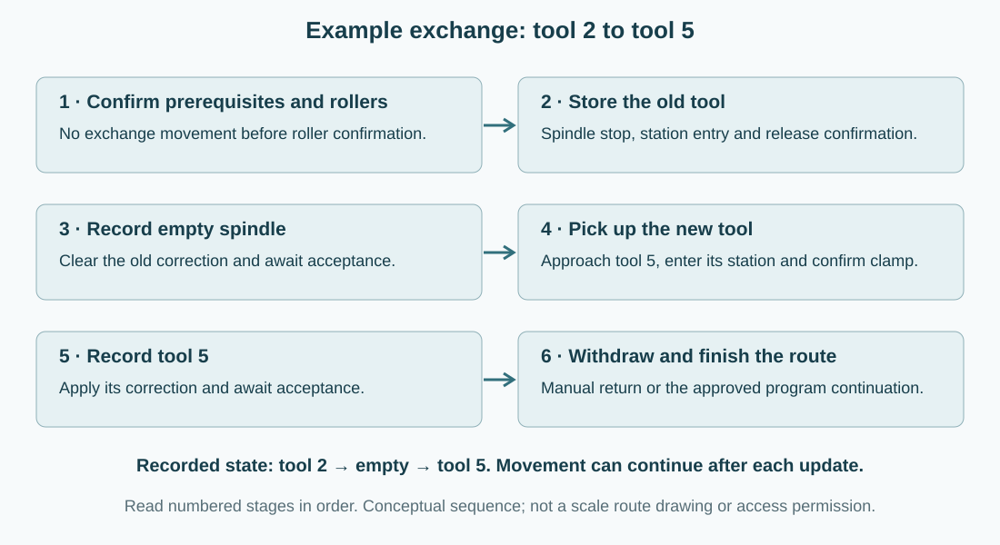

RADONIX · ROUTERXYZBC+TC · CHAPTER 11
Operator Manual · English · 8 October 2026
Tool Selection and Tool Exchange
Choose the intended tool, understand when selection starts an automatic movement, and follow the exchange through confirmed tool state, compensation and withdrawal.
Expanded draft for review. This chapter describes the supplied tool-selection and exchange behaviour. Actual tooling, magazine geometry and approved machine procedures must match the installation.
11.1 Distinguish the fitted tool, the requested tool and a completed exchange
A tool exchange replaces the tool assembly held by the spindle with another assembly stored at a configured magazine station. It can involve movement across the machine, spindle shutdown, release and clamping, application of tool correction, and a return movement. It is not simply a change of text in the Tool field.
In this chapter, a tool assembly means the cutter and its holder as fitted to the spindle or magazine. A station is the configured storage location associated with a tool number. The machine needs a clear, correctly configured route to both the old tool's station and the requested tool's station.
Keep three states separate
The current tool is the tool number the application records as physically held by the spindle. The requested tool is the destination of the operation you are asking it to perform. A completed exchange means the operation has finished its required stages; seeing the requested number become current is only one stage of that process.
| Information | Meaning | What it does not prove |
|---|---|---|
| Current tool number | The application's recorded physical tool state. | Independent identification of the actual cutter or proof that all exchange movement has ended. |
| Requested tool number | The tool the operation intends to load. | That the tool has already been picked up. |
| Blank Tool display / tool zero | The spindle is recorded as empty. | Permission to touch the spindle or assurance that a fault could not leave an uncertain physical condition. |
| Enabled tool | The configured tool is available for selection. | A fresh physical inventory of its magazine pocket. |
| New current tool shown during exchange | The pickup/clamp confirmation boundary has been reached and recorded. | Completion of correction, withdrawal, return or program continuation. |
Tool numbers are identifiers, not cutter dimensions. Tool 3 does not mean a 3 mm cutter, and a larger number does not mean a longer tool. Match each number to the job's approved tool list and the actual magazine arrangement.
“Manual” describes who requests the exchange
A manual tool change in this application is an operator-requested automatic exchange using the machine's configured routes. It does not mean that the operator should reach in and remove the tool by hand. Committing a selection can start the powered sequence.
A program tool change is requested by the machining program, normally through M6 with its selected tool number. It uses the shared exchange mechanism but can automatically continue the machining program afterward. A manual request finishes without resuming that program.
Do not edit the recorded current tool merely to make the screen agree with your intention. If the display and actual spindle disagree, stop and use the authorized reconciliation procedure. The next route depends on which tool the application believes it must put away.
11.2 Read the Tool field and the available tool list
Locate the Tool field in the main-window spindle area. In its normal, unedited state it displays the recorded current tool. During a tool operation it becomes a disabled display of that current state so that the intermediate empty and newly clamped states can be shown.
The supplied catalog has tool numbers 1 through 32. The drop-down list includes only enabled tools, together with a blank entry for the empty spindle. A shorter list does not necessarily indicate a display problem: the installed magazine may use only a subset of the catalog.
| What you see | Interpretation | What to check |
|---|---|---|
| A tool number in the normal idle display | The recorded current tool. | That the actual assembly agrees with the job and machine record. |
| A blank normal display | Tool zero: recorded empty spindle. | That the actual spindle condition agrees before a new exchange. |
| A number missing from the choices | The tool may be disabled. | The approved magazine configuration and physical inventory. |
| A disabled field | The machine is not currently accepting a manual selection or an operation is active. | The availability explanation and current operation. |
| An uncommitted selection draft | A proposed value, not a completed exchange. | Whether you intend to commit it or discard it. |
The blank entry is an operation, not a cosmetic choice
Choosing and committing the blank entry requests tool zero. If a tool is currently fitted, this means returning it to its station and ending with an empty spindle. Do not choose blank just to tidy the field or clear an old-looking number.
In reports, the empty spindle can appear as zero or T00 rather than a blank. These are representations of the same empty-tool request or record. Always read whether the message refers to a request, a recorded state or a completed operation.
Enabled is configuration, not a pocket sensor
The Enabled setting states that a tool is installed and available. The software's representation of a tool being present in its pocket follows the enabled state and whether that tool is recorded in the spindle. It is not a separate physical inventory measurement of every pocket.
If someone has removed a tool from a pocket, swapped assemblies or changed the magazine arrangement, the displayed choices can still look valid while the physical setup is wrong. Reconcile the magazine and setup information before selecting a tool. Enabling a number does not create the missing tool or correct its station coordinates.
The recorded current tool is kept enabled and cannot be disabled through its ordinary Enabled editor. This preserves its availability as the tool that may need to be returned. Do not try to disable it as a workaround for an incorrect record.
FIGURE 11-1 · TOOL-SELECTOR SCREENSHOT REQUIRED
Current tool, enabled choices and empty-spindle entry
Insert an English main-window crop showing Tool and its expanded list. Label the blank entry as “Request empty spindle when committed” and identify a few enabled tool numbers. Include a separate recorded view of the disabled current-tool display during an approved demonstration, if available.
Suggested image: assets/images/11-tool-selector.png. Do not select an item merely to take the picture: list selection can commit a powered exchange request.
The nearby Measure Tool control is a different command; some design views use the caption Measure Tool. It starts a measurement procedure rather than serving as an Apply button for the Tool selector. Length measurement is covered in Chapter 12.
11.3 Prepare the magazine, complete route and machine state
Complete the preparation before using the selector. Because committing a choice can immediately start an exchange, the list is not a place to experiment with tool numbers while people or loose equipment remain in the movement area.
For a manual request, the machine must be connected, the required axes homed and the machine appropriately idle. The main program, loading, homing, managed positioning and other tool operations must not be active. The tool changer also waits for initial tool-correction synchronization after connection.
Availability is checked again for the actual request. A selectable-looking field means that a request can be prepared; it does not guarantee that the particular exchange will pass its hardware, program and route checks.
| Check | What to establish before committing |
|---|---|
| Current tool | The physical spindle and recorded current tool agree. |
| Old tool's station | The correct return pocket is clear and suitable to receive the assembly. |
| Requested tool | The enabled number identifies the required assembly, actually present at its approved station. |
| Magazine setup | Station positions and approach/departure routes match the installed holders and magazine. |
| Full movement envelope | The old and new tools, spindle, head and other moving equipment clear fixtures, material and surrounding objects. |
| Final destination | The return location remains suitable for the new assembly, including its different length or shape. |
| Machine readiness | Homing, stopped axes, gantry pairing and relevant pressure, spindle and grip conditions are valid. |
| People and access | The magazine and work area are prepared under the machine's guarding and operating procedure. |
| Next activity | You know whether the exchange will finish as a manual operation or can continue into machining. |
Homing and stopped axes are prerequisites
The exchange requires established machine coordinates because its station points are stored in machine coordinates. All configured axes must satisfy the homing requirement, including the second gantry motor. A numerically plausible position after a restart is not a substitute for the required reference procedure.
The relevant movement paths must be idle, and the axes must be ready, stopped and under the expected control and coupling arrangement. The application rejects an exchange when another motion source still owns or is stopping those axes. Do not use repeated selection attempts to work around an operation that has not finished.
The spindle and rollers have their own checks
A physical exchange requires the supplied background interlocks and exchange routines to be available, along with the required spindle run, speed and tool-release outputs. Configured pressure, thermal and drive-ready inputs are checked. The recorded tool is compared with applicable grip feedback before starting.
Enabled rollers must report their free position through the configured physical sensors. The exchange waits for this confirmation before its first movement. An initial wait while rollers release can be normal; a timeout or later loss of confirmation is a fault. Do not reach in to move a roller while the sequence is active.
Coordinate validation checks configured travel and drive-position limits; it does not inspect the actual magazine, check that a pocket is empty or detect all obstructions. If the physical state or route is uncertain, resolve it through the approved setup procedure before a powered exchange.
11.4 Commit a manual request or discard an uncommitted choice
The Tool selector is connected to a machine command. Choosing an item from its list commits a request; an accepted Enter commit can also submit the selected value. Do not expect a separate Apply button or a second confirmation dialog before the exchange begins.
Prepare the complete operation first. If you only want to inspect tool configuration, use the appropriate authorized settings view without submitting a choice in the main-window selector.
- Confirm the actual current tool and the intended replacement.
Read the job's tool list and check the physical magazine arrangement through the approved procedure.
- Complete the preparation and establish a suitable return location.
The machine must be ready for the entire exchange and the new tool's return.
- Open the Tool choices only when ready to issue the request.
Identify the exact enabled number. The blank entry requests unloading to an empty spindle.
- Choose the intended item once.
List selection commits the request. If working with a pending editable value, Enter is also a commit action. Treat either action as permission for powered movement.
- Observe whether the request is accepted or rejected.
If accepted, the control becomes disabled and presents the recorded current tool. If rejected, read the explanation before trying again.
- Stay attentive until the whole operation finishes.
Tool-number changes and pauses at the holder are intermediate events, not completion signals.
| Action | Meaning | Operator caution |
|---|---|---|
| Commit an item from the drop-down list | Submits the chosen tool-change request. | Prepare for immediate automatic activity. |
| Enter on an uncommitted valid value | Can commit that request. | It is not merely a way to finish typing without consequence. |
| Escape before commitment | Discards the uncommitted edit. | Does not cancel a machine operation already accepted. |
| Move focus away | Does not itself commit a tool change. | An uncommitted draft may remain; deliberately discard it if no request is intended. |
| Choose the blank entry | Requests tool zero, the empty-spindle state. | Can initiate unloading and return motion. |
| Press the nearby length-measurement control | Requests a separate measurement operation. | It is not the confirmation button for the tool selection. |
A draft is not the recorded tool
While idle and editable, an uncommitted draft may be retained in the field. After the request is accepted, the display returns to the recorded current tool rather than showing the requested number as though it had already been loaded. This avoids reporting a successful pickup prematurely.
For example, you request tool 5 while tool 2 is fitted. The disabled field can still show 2 at first. That is expected; the operation has captured the request for 5, but the old tool has not yet passed its release confirmation. Do not submit the same request again because the visible number did not immediately become 5.
If validation or admission refuses the request
The selector rejects invalid or disabled tool choices. The exchange can also be refused after selection because machine readiness, a required routine or the route is unsuitable. Read the error text and controller report. A valid number is necessary but does not guarantee an admissible physical exchange.
Once an operation has started, use the proper stopping procedure if interruption is needed. Closing the list, pressing Escape or clicking another tool is not a substitute for stopping the accepted sequence. Recovery after a stop is covered later in this chapter.
11.5 Follow the exchange from roller release to final withdrawal
A full exchange has several distinct stages. Understanding them helps you interpret the pauses and tool-number changes without mistaking an intermediate event for completion. The sequence below assumes an old tool is fitted and a different enabled tool is requested. Empty-spindle and same-tool cases are described later.

First, release the rollers and prepare spindle shutdown
The first waiting step qualifies the enabled rollers in their free position. Roller outputs are kept off during the active exchange, and enabled roller sensors must confirm their required state. The sequence does not begin its motion before this exchange's roller confirmation.
The exchange then requests spindle shutdown. Shutdown can run while the head approaches the old tool's station. It waits for the required spindle-stop confirmation at the configured approach point before entering the holder to place the tool. Therefore, early approach movement does not itself mean that spindle rundown has already completed.
Store the old tool and record the empty spindle
The head approaches the old tool's holder through its configured entry point, moves into the station at the exchange velocity and requests release. The stage ends at the holder, with the axes stopped. The application checks the release result and applicable grip feedback before recording the empty spindle.
The old tool correction is then cleared and its acceptance is awaited before the route proceeds. This pause is part of the exchange. Do not reach toward the holder because the display has become blank or the axes have stopped temporarily.
Pick up the new tool and accept its correction
The empty spindle leaves the old station through its configured departure point, reaches the raised traverse coordinate and approaches the requested station. It enters the new holder and requests clamping. After the clamp stage completes with the axes stopped and applicable feedback confirmed, the new tool number is recorded.
The new tool correction is applied and acknowledged before the withdrawal route proceeds. The tool can therefore be shown as current while the spindle is still at its holder. Wait for the complete route and, where applicable, program continuation.
| Boundary | Required progress | What may remain |
|---|---|---|
| Rollers confirmed | The exchange's roller wait has succeeded. | All spindle and tool movements. |
| Old tool released | Release confirmed, stage complete and axes stopped. | Empty-tool recording, correction clearing, departure and pickup. |
| New tool clamped | Clamp confirmed, stage complete and axes stopped. | New-tool recording, correction acceptance and withdrawal. |
| New correction acknowledged | The machining path has accepted the requested correction. | Withdrawal and return or entry positioning. |
| Return route completed | The generated return movements have finished. | For a program exchange, a continuation check may still be required. |
The raised traverse point is a configured coordinate
For a station approach that requires an X/Y change at or above the configured axis tolerance, the route first moves Z to its configured MaxCourse coordinate, traverses to the station approach X/Y, then moves Z to the approach height. If X/Y is already within tolerance, that approach can use a direct Z movement without the preliminary lift. MaxCourse is a machine setting; it is not a measured clearance above today's material or clamps.
Which parts use the slower exchange velocity?
The dedicated ToolChanger Velocity is used when placing the old tool: from its placement-entry point into the station, and from the station to its placement-exit point. Other generated movements use TraverseVelocity, including the reviewed new-tool pickup entry and withdrawal. Do not assume that every movement near a tool pocket uses the dedicated slower setting.
The application captures the route and relevant values for the request and checks points against configured travel. These checks do not prove obstacle clearance. Every approach, holder movement, lift, traverse and final return must match the actual installation. The staged stops are automatic sequencing points, not operator access windows.
11.6 Interpret release, clamp and current-tool confirmation
A release or clamp output requests a mechanical action. Confirmation is a later condition reached after the applicable feedback and settling time. This is why an exchange can wait at a holder even though an output has already changed.
The supplied release routine requests the grip to open. Where the corresponding physical sensors are assigned, it requires the released indication and absence of the tool-clamped indication continuously for the configured release settling time. A brief flash of the expected signal is not enough.
The clamp routine starts from a confirmed open state and removes the release request. For a nonempty pickup, it requires the applicable clamped, not-released and piston-retracted indications to remain suitable for the clamp settling time. Closing an empty spindle after unloading is a different case and does not require a tool-present clamped indication.
| Term or indication | Meaning in the supplied exchange | Limit of the indication |
|---|---|---|
| Release command | The mechanism is being asked to open. | The tool has not necessarily been released successfully. |
| Release confirmed | The applicable release conditions have held for the settling interval. | The departure route and tool-state recording may still be pending. |
| Clamp command | The release request has been removed to close the grip. | The new tool is not yet necessarily confirmed. |
| Clamp confirmed | The applicable closing conditions have held for their settling interval. | Correction and withdrawal can still remain. |
| Current tool recorded | The application has accepted the completed stage and records its tool state. | The entire exchange need not be complete. |
| Tool offset acknowledged | The machining correction has been accepted. | A travel route or machining handoff may still follow. |
Understand the timing settings without adjusting them casually
ToolChanger Release Time and Clamp Time define the required settling intervals in milliseconds. FeedbackTimeout provides the additional wait allowance. For example, an illustrative 500 ms settling interval with a 5,000 ms additional allowance gives the relevant routine a 5,500 ms timeout threshold. These values explain the timing relationship; they are not instructions to change the installed settings.
Where a grip or piston sensor is not physically assigned, the supplied routine omits that sensor's level check but retains its timed sequence. With no assigned grip feedback, the settling delay still occurs after the command. Do not describe such an installation as independently verifying every physical grip condition.
Air used for taper cleaning is also separate. A taper-blow output can accompany release or clamping, but it is not an input that proves the tool has been released, picked up or retained correctly.
Why the display changes before the head leaves
After the old-tool release stage has completed and the axes are stopped at the station, the application verifies the applicable feedback and records tool zero. After the new-tool clamp stage, it verifies the corresponding conditions and records the new number. It then applies the appropriate correction before allowing the next route.
Those recorded state changes are saved immediately. If saving the new physical state fails, the operation halts at that stage rather than knowingly continue with an unsaved record. The in-memory display can already show the new state, so record both the displayed number and the failure message for recovery.
If the physical tool and record cannot be reconciled after a fault, do not choose a convenient number to restore normal-looking controls. The record is an input to the next movement sequence. Recovery must establish which assembly is actually held, which pockets are occupied and which stage was last completed.
11.7 Understand manual replacement, pickup, unloading and same-tool requests
Not every manual selection produces the same physical sequence. The route depends on the recorded current tool and the requested tool. Before committing, identify which of the following cases applies.
| Starting record | Request | Expected exchange pattern |
|---|---|---|
| A nonzero tool is current | A different enabled tool | Store the old tool, record empty, pick the new tool, apply its correction, withdraw and return. |
| Empty spindle | An enabled nonzero tool | Approach the requested station, confirm spindle stop, open the empty grip, pick and clamp the tool, apply its correction and return. |
| A nonzero tool is current | Blank / zero | Store the old tool, clear its correction, withdraw, close the empty spindle and return. |
| The requested tool is already current | The same number | No physical magazine exchange is required; the correction handshake can still be performed. |
A manual exchange returns to its captured machine position
For an ordinary physical manual exchange, the application captures the machine coordinates at the beginning and builds the final return to that position. This is a return of the head to the same machine coordinates, not a guarantee that a different tool tip occupies the same point in space.
Changing the tool correction updates the machining coordinate relationship. It does not make the manual return automatically preserve the previous physical tool-tip clearance. This is why a suitable start/return location must be established before requesting a longer or differently shaped tool.
Unloading includes closing the empty spindle
After the old tool is released into its station and the empty state is recorded, the spindle must still withdraw along the configured departure route. An unload-only request also runs the empty-spindle closing sequence after withdrawal from the holder. It then completes the return.
The blank display during those stages does not mean the unload is finished. Remain clear until the operation has completed and the machine's access conditions have been met. Do not use the blank selector entry as a shortcut to request a manual drawbar release while standing at the spindle.
Requesting the same tool is not a fresh physical inspection
A same-tool request skips the physical exchange route and proceeds through the correction-handling path. It does not unload and reload the assembly just to prove that it is present. It must not be used to repair uncertainty about tool identity, magazine occupancy or grip condition.
A control may not create a new request when its value has not changed. Where a same-tool request is submitted through an approved command, understand the behaviour above rather than expecting a complete magazine cycle.
Finish the manual task before making another decision
A manual exchange does not automatically resume the main machining program. Wait for its completion report, the settled machine state and the correct recorded tool. Then prepare the next task deliberately: measurement, job verification or an approved machining start.
A physical exchange requests spindle shutdown and does not itself issue a normal spindle-start command at the end of the manual return. That does not remove the need to verify actual standstill and access conditions. A same-tool request is different because it may not run a physical shutdown sequence at all.
Do not infer completion solely because the selector becomes available, nor assume it is unfinished solely because another machine condition keeps the selector disabled. Read the operation result and the current machine state together.
11.8 Understand program-requested exchange and automatic continuation
A machining program can select a tool number and request its exchange through M6. The operator needs to recognize this instruction because a normal job start or continuation can lead to a magazine movement before cutting resumes. It is not necessary to open or edit the machine-control routines to operate an approved job.
The program request is associated with the prepared machining state. Once the main path is paused for the exchange and its axes are available, the application runs the required stages. After the new correction has been accepted and the return completed, the supplied M100 handoff can resume the machining program without another press of Run.
| Point of comparison | Manual selector request | Program request |
|---|---|---|
| Who chooses the target? | The operator commits a tool choice. | The prepared program supplies its selected tool. |
| Physical exchange mechanism | The configured staged exchange. | The same staged mechanism, when physical exchange is required and enabled. |
| Ordinary return destination | The captured machine starting position. | The machining continuation position adjusted for the new correction. |
| Machining after the exchange | Not automatically resumed. | Can resume automatically through the continuation handoff. |
| AutomaticToolChange disabled | Manual changes remain separately available subject to their checks. | The physical M6 request is ignored and the current tool is retained. |
Disabling automatic exchange does not require a manual acknowledgement at every M6
The ToolChanger setting AutomaticToolChange, presented with the caption Enabled, allows physical exchange for program requests. In the supplied implementation, turning it off causes the requested automatic tool change to be reported as ignored and the current tool to be retained. The same-tool correction and continuation handling can still proceed.
This is not a “stop and ask me to fit the tool” mode. It must not be used casually on a job that requires another cutter. The machine can continue with the retained tool after the applicable checks. Only use this setting under an approved operating arrangement in which the tool requirements have already been resolved.
Tool preparation can occur before entry positioning
When the normal start procedure requires an entry tool, the application can acquire it before positioning the head at the machining entry. For a physical exchange, it confirms the tool, accepts its correction and withdraws to the configured raised Z position. The job-start workflow then resolves the entry route using the accepted new correction.
Do not interpret the end of that tool preparation as the end of all automatic activity. Entry positioning and machining can follow. Likewise, if the tool was prepared successfully but entry positioning is rejected, the new physical tool remains the current tool; rejection does not put the old one back.
Same-tool and final requests
A program request for the already current tool does not require a physical magazine exchange. It still uses the correction and continuation handling appropriate to the prepared program. An M6 at the end of the available machining path can complete without a machining handoff because there are no remaining blocks to run.
For ordinary continuing M6 operation, the return target accounts for the new tool correction. It need not equal the machine coordinates at which the exchange began. Check the job's entry and return clearance for the actual tool; the software's coordinate calculations do not inspect nearby clamps or material.
Prepare for the full sequence before Run, including the tool movement and any cutting that follows. Never approach the machine during a stopped interval between exchange and handoff. If the continuation is refused, read the result and use the job recovery procedure rather than issuing an unrelated return command to force it onward.
11.9 Keep station coordinates, tool length and machining correction separate
Tool setup contains several different kinds of information. Station coordinates tell the machine where to store or collect a tool. Approach and departure values define how the spindle enters and leaves the holder. Tool length and correction describe how the fitted tool affects machining coordinates. Changing one is not a reliable way to correct a problem in another.
The per-tool settings are grouped under ToolChanger → Tools, with entries such as T01 and T02. These labels refer to the numbered tool stations. The actual values must come from authorized commissioning and setup, not from the illustrative examples in a manual.
| Setting | Meaning | Operator distinction |
|---|---|---|
| Enabled | Whether the configured tool may be selected. | Availability, not measured pocket occupancy. |
| Position | The holder's configured machine-coordinate station point. | A magazine location, not work zero. |
| PickVector | Displacement from Position to the old-tool placement entry / new-tool pickup exit point. | Describes a nearby route point, not the tool's cutting correction. |
| PlaceVector | Displacement from Position to the old-tool placement exit / new-tool pickup entry point. | The other side of the holder route; its role differs between placing and picking. |
| Length | Measured physical tool length relative to the empty-spindle reference. | Used in compensation; selecting a tool does not measure this value. |
| Offset | Configured X/Y/Z machining correction. | The Z correction is added to Length for the machining-path tool correction. |
Reading a route displacement
A vector here simply means a signed displacement in X, Y and Z from the station point. For example, if an imaginary station is at X = 600, Y = 100, Z = 80 mm, and a route vector is X = 0, Y = −30, Z = 0 mm, the corresponding point is X = 600, Y = 70, Z = 80 mm. The vector is not an absolute destination.
The names can be misleading if read without the route context. When putting away the old tool, the route enters through the point defined by PickVector and leaves through the point defined by PlaceVector. When collecting a new tool, it enters through PlaceVector and leaves through PickVector. Use the approved route drawing for the actual holder; do not reverse values merely because the names seem unexpected.
How length affects the machining correction
For a nonzero tool, the machining-path correction uses the configured X and Y Offset values. Its Z correction is the measured Length plus the configured Z Offset. For the empty spindle, the tool correction requested by the exchange is zero.
After a confirmed release, the application clears the old correction. After a confirmed pickup, it applies the new one. It waits for acceptance before proceeding. This prevents the next stage from being treated as ready merely because a request to change the correction was sent.
Selection does not measure the tool
The exchange uses the stored length and correction for the chosen tool. It does not automatically prove that those values match a replacement cutter or a changed projection in the holder. Follow the approved measurement procedure whenever the setup requires it; Chapter 12 describes the measurement controls.
Likewise, changing a work origin does not relocate a magazine station. Do not adjust a work reference to compensate for a tool missing its holder. A holder-route problem requires assessment of the machine reference, station setup and physical arrangement.
FIGURE 11-3 · STATION-SETUP ILLUSTRATION REQUIRED
One holder, its approach points and its tool data
Supply an installation-specific photograph or commissioned route drawing identifying Position, the point from PickVector and the point from PlaceVector. Pair it with an English settings view showing the same tool's Enabled, Length and Offset values. Label all example values as installation-specific.
Suggested image: assets/images/11-station-setup.png. Show placement and pickup directions separately, and identify the configured raised traverse coordinate. Obtain the photograph under the machine's access/isolation procedure.
During ordinary operation, the operator's responsibility is to verify that the approved tool and setup are in use. Do not experiment with station positions, vectors, timing or corrections to make a rejected exchange pass. An accepted numerical value can still describe a physically unsuitable route.
11.10 Stop an exchange and establish the physical state before recovery
An interrupted exchange is not automatically returned to its starting condition. The old tool may still be clamped, may have been released, or the new tool may already be fitted. The head may be partly engaged with a holder. Recovery must begin with the actual stage and physical condition, not with the tool number you originally requested.
The application's Pause and Reset routes cancel pending tool-operation continuation and request all-motion stopping. Reset also schedules the main machining program's reset after stopping, while Pause retains its program position. Neither is a promise to resume the interrupted tool-exchange stage with one more click.
- Use the required stopping response.
For an ordinary interruption, use the appropriate motion-stopping control. For immediate danger, use the installed emergency response.
- Remain clear while stopping takes effect.
A request is not instantaneous physical standstill. Follow the machine's procedure for abnormal or incomplete stopping.
- Identify the last reported exchange stage.
Read whether it was approaching, placing, clearing correction, picking, applying correction, returning or handing back to the program.
- Record the displayed current tool and the physical observations.
Determine which tool is actually held and which pockets are occupied through the approved inspection procedure.
- Reconcile the grip, position and correction state.
If any part is uncertain, obtain authorized assistance before moving or editing the recorded tool.
- Prepare a deliberate recovery.
Establish a suitable route out of the present situation and the correct job state. Do not assume a fresh selection safely continues the unfinished route.
| Last known stage | What must be established |
|---|---|
| Before release of the old tool | Whether it remains securely held and whether the head is engaged with its station. |
| After release, before empty state is recorded | Whether the record is behind the actual mechanical event. |
| After empty state is recorded | The old tool's location, grip state, correction state and a suitable departure route. |
| After pickup/clamping, before new state is recorded | Whether the new tool is physically held even though its number has not yet been committed. |
| After the new tool is recorded | Whether correction, withdrawal or return remains incomplete. |
| During continuation | Whether machining had already restarted and which program position remains. |
Cancellation revokes continuation; it does not undo an exchange
The supplied cancellation path stops the active exchange movement and relevant routines where possible, and removes the pending continuation. It does not move the old tool back into the spindle or reverse every completed motion. The current-tool record retains the state most recently accepted.
There can also be a short interval between a physical grip event and the application's acceptance and recording of that stage. A fault during that interval is one reason the displayed number must not be the only evidence used for recovery.
Reconnection is not a mechanical reset
Losing the connection cancels the pending operation. On reconnecting, the application synchronizes the machining correction from the recorded tool. That synchronization does not inspect the spindle or magazine and does not complete an interrupted mechanical exchange.
If the tool record or its saving failed, preserve the message before restarting the application. Do not use restart, re-homing or setting edits as a trial-and-error way to remove the fault. In particular, a tool partly engaged with a holder may make an ordinary homing or positioning route unsuitable.
Only continue when the physical tool, magazine occupancy, machine reference, applied correction and retained or reset job position agree. If they cannot be established from the approved operator procedure, leave the machine stopped and involve the person responsible for recovery.
11.11 Read exchange messages and report a fault with its stage
Tool-change reports describe both the operation's progress and failures. Read the messages for the current attempt in time order. A message about entering a holder describes a reached route step; a later confirmation or completion message establishes a different boundary. Do not treat a descriptive motion message as proof that every action named in it has succeeded.
The report prefix ChangeTool identifies the exchange. The selector's availability messages may use R_ToolSelector. These are names to recognize and quote when seeking assistance, not instructions to open a programming editor.
| Message or phrase | Meaning for the operator | What may still follow |
|---|---|---|
| Starting T02 to T05, manual or G-code | The exchange has captured its old and requested tool and its operating mode. | The complete mechanical sequence. |
| Waiting for enabled rollers | The operation is waiting for the required free-position confirmation. | Spindle shutdown and all exchange movement. |
| Entering holder / Releasing / Clamping | A described route step has been reached. | The corresponding result and stage confirmation. |
| Previous tool released; CurrentTool=0 recorded | The release stage was accepted and the empty state recorded. | Correction clearing, departure, pickup or empty-spindle closing. |
| New tool clamped; CurrentTool recorded | The pickup stage was accepted and the new tool recorded. | Correction acceptance and withdrawal. |
| Tool offset acknowledged | The requested correction has been accepted. | Another route or continuation, depending on the stage. |
| Starting M100 to resume the work program | The exchange is requesting the machining handoff. | Its success/failure result and possible machining. |
| Completed, CurrentTool=… | The exchange completion path has been reached. | Check the operating mode and current machine state; a program exchange can have resumed machining. |
Use the fault number together with the message
The following numbers describe the supplied exchange fault reporting. They are not universal error meanings across every routine. Read the associated operation name, exit reason and explanatory text as well as the number.
| Fault | Reported condition | What must be assessed |
|---|---|---|
| 2 | A required spindle configuration or applicable health/interlock condition was lost. | Configured outputs and relevant pressure, thermal and drive-ready indications. |
| 3 | Spindle stop was not confirmed or its required stopped condition was lost. | Actual rundown, rotation feedback and the point at which the exchange stopped. |
| 4 | Release feedback did not settle before timeout. | The actual grip/tool condition and applicable released/clamped feedback. |
| 5 | The confirmed released state was lost or clamping did not start from the required open state. | The grip's physical state before another command. |
| 6 | Applicable clamp/piston feedback was lost or did not settle. | Whether the tool is actually held and whether withdrawal is incomplete. |
| 7 | Enabled roller free-position confirmation timed out or was lost. | Roller position, configured sensors and the interrupted exchange stage. |
Not every rejection is a mechanical fault
A disabled tool number, incomplete homing, another operation in progress, invalid route point or missing exchange routine can refuse a request before physical exchange starts. Initial correction synchronization can also keep the selector unavailable after connection. Identify the actual message instead of assuming the grip mechanism has failed.
Other failures can occur after a mechanical stage, such as inability to save the current-tool record or refusal of a tool correction. These can leave the new physical state established while further movement is withheld. The message's stage is essential to recovery.
FIGURE 11-4 · EXCHANGE-REPORT SCREENSHOT REQUIRED
One complete attempt, with its last confirmed state
Insert an English report view from an approved recorded exchange. Show timestamps, the initial request, a current-tool recording message, the correction acknowledgement and the final completion or failure. If more than one crop is necessary, keep their time order clear.
Suggested image: assets/images/11-exchange-report.png. Annotate “requested tool,” “recorded current tool” and “operation result” separately. Do not create a fault or interrupt a live holder movement for this image.
Prepare a useful recovery report
Record the tool originally fitted, the tool requested, the displayed current tool, the manual or program mode and the last completed stage. Describe the physical tool and pocket observations separately. Include whether spindle shutdown, release, clamping, correction or return had been reported successful.
Also state whether Pause, Reset, emergency action, connection loss or an application restart occurred. Preserve the surrounding messages instead of quoting only the last line. Do not repeat requests, edit the current tool or disable a sensor to remove the error before the cause and recovery route have been established.
11.12 Follow an example exchange and check your understanding
Use the following example as a reading exercise before observing an approved demonstration. The tool numbers are illustrative, and the example does not supply the station geometry or operating authority needed to perform an exchange on a real machine.
Example: request tool 5 while tool 2 is fitted
The operator confirms that tool 2 is physically held and recorded, its return pocket is suitable, and enabled tool 5 is present at the correct station. The job information identifies tool 5 as the intended assembly. The machine has valid homing, suitable supplies and feedback, and no competing operation.
Before opening the selector, the operator checks the complete movement envelope and the final return location with tool 5 fitted. This is particularly important if tool 5 is longer. Only then does the operator choose tool 5 and thereby commit the manual request.
| Observed progress | Expected recorded tool | Operator interpretation |
|---|---|---|
| Request accepted; rollers checked and old-tool approach begins | 2. | The request for 5 has been captured, but tool 2 has not yet been put away. |
| Release of tool 2 confirmed and stage recorded | Blank / 0. | The spindle is recorded empty; departure and pickup remain. |
| Tool 5 clamped and stage recorded | 5. | The new assembly is recorded; correction and withdrawal can still remain. |
| Correction accepted and manual return completed | 5. | Verify the final result and machine state. This manual exchange does not resume machining. |
The operator stays at the operating position throughout. A short stop at either holder is expected sequencing, not permission to inspect the grip by hand. If a fault occurs at any stage, the operator uses the prescribed response and preserves the last confirmed state for recovery.
Change the request to empty spindle
If the same starting setup instead receives a blank/zero request, tool 2 is stored without picking up tool 5. After release and empty-state recording, the spindle withdraws, closes in the empty-spindle mode and completes the return. The blank display appears before all those remaining actions have finished.
Change the request source to the program
If an approved program requests the tool change with automatic exchange enabled, prepare for machining to follow after the exchange and continuation checks. The ordinary program return destination accounts for the new correction; it is not simply the manual request's captured starting coordinates.
If this is entry-tool preparation at the beginning of a job, the exchange withdraws and the start workflow then resolves entry positioning with the accepted tool correction. The end of the magazine movement is still not permission to enter the work area.
Review questions
- Does selecting a tool merely update a number?
No. Committing a valid choice requests the powered exchange and can start automatic activity immediately.
- What does the blank entry request?
Tool zero: an empty spindle. With a tool fitted, that can mean unloading it to its station and returning afterward.
- Does an enabled number prove that its pocket contains the correct tool?
No. It is configured availability, not a fresh physical inventory measurement.
- Why can the old tool number remain after you request a new one?
The display reports the current recorded state until the release stage is accepted. It does not prematurely present the requested tool as fitted.
- Does the new tool number mean that withdrawal has finished?
No. The number is recorded after pickup/clamp confirmation; correction acceptance and further movement can remain.
- Does a manual exchange preserve the same physical tool-tip position?
Not necessarily. It returns the head to captured machine coordinates; the new tool's projection may differ.
- Does automatic exchange disabled mean the program waits for a manual replacement?
No. The supplied behaviour retains the current tool and can continue through the same-tool handling. The job must be compatible with that approved configuration.
- Can you repair an interrupted exchange by editing CurrentTool?
Not as an ordinary shortcut. First reconcile the actual grip, tool, pocket occupancy, position and correction through the authorized recovery procedure.
You are ready to operate the selector independently when you can identify the actual and requested tools, explain the full route and final destination, distinguish confirmation from completion, and describe what to do if any stage is interrupted.